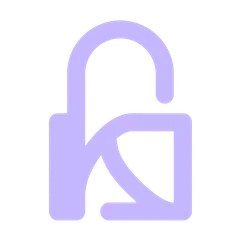

Your secrets.
Only yours.
Komboe is a zero-knowledge password manager. Built on Encryptoglyph encryption, with no backdoor and no admin password reset — nobody but you can open your vault.
Everything in one vault
One encrypted home for every login, passkey and secret — on every device you use.
Encrypted vault
Passwords, notes, cards and identities, encrypted on your device with Encryptoglyph before anything is synced.
Browser extension
Autofill and save logins in Chrome, Edge, Firefox, Brave and Safari.
Android
Native autofill service and biometric unlock on your phone.
Desktop
Apps for Windows, macOS and Linux with system-tray quick access.
Zero-knowledge by design
Your master password never leaves your device. Vault contents are end-to-end encrypted on your device before upload, so we can't read your vault data. We do process some account metadata, as described in the Privacy Policy.
How Komboe protects youNo backdoor
There is no master key and no way for us to decrypt your data.
No admin reset
Admins can't reset your master password. Keep your recovery kit safe.
One Komboe account
One Komboe account syncs and protects all your devices and apps: web vault, browser extensions, Android, desktop, CLI and MCP. Your master password unlocks it and never leaves your device.
Get startedAccounts & sign-in FAQ
What is a Komboe account?
One Komboe account syncs and protects all your devices and apps: the web vault, browser extensions, Android, desktop, CLI and the MCP agent integration. You sign in once with your email and master password, optionally with a passkey and two-factor authentication.
Does Komboe ever see my master password?
No. Komboe is zero-knowledge: your master password never leaves your device and your vault is encrypted before it syncs.
Can an admin reset my master password?
No. There is no backdoor and no admin password reset. Keep your recovery kit safe.
Does this website ask for my password?
No. Log in and sign up happen in the Komboe web vault, never on these marketing pages.
What about self-hosting?
Self-hosted servers use local Komboe accounts by default. Organizations can optionally add enterprise SSO via OIDC or SAML for sign-in; vault decryption still requires each user's master password. A self-hosted Komboe server does not contact Komboe. It also does not contact Bitwarden, GitHub, Cloudflare, or the websites in the vault unless you turn that on. Desktop and CLI update checks stay off until you point them at a feed you host. Have I Been Pwned is contacted only when you start a check yourself: opening the exposed-passwords report or pressing the breach-check button on a login. Each check sends only a k-anonymity hash prefix, never the password. The web vault uses the server it was loaded from. Until you save a server URL, the browser extension, desktop, CLI and Android apps default to the upstream Bitwarden cloud servers. Set your server URL when you first sign in.